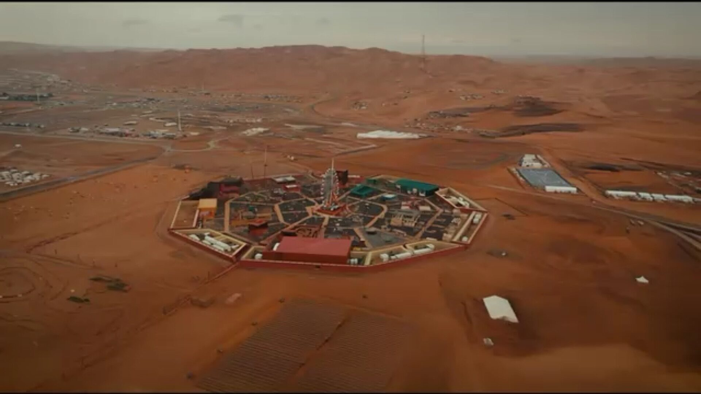

The Liwa Trail
Every act on the Desert's Grand Stage has its place on the Liwa Trail — nine physical stops, one route, nine next steps.
The Trail isn't a suggested route — it's the map of the festival itself. Walk it in order, or jump straight to the stop that matches what pulled you here.
Stop 1 · The Spectacle Peak
Tal Moreeb
The world's tallest dune, turned festival stage. Motocross, drift, and sandboarding run at its base through the full 24-day run.
01 / 09
Ready to Walk It?
Build your own route through the Trail
Save any stop to your itinerary and pick up your plan on any device.
Start My Itinerary